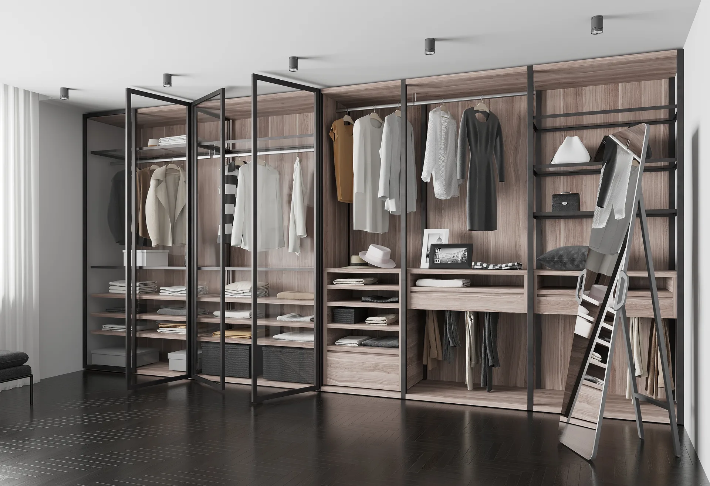
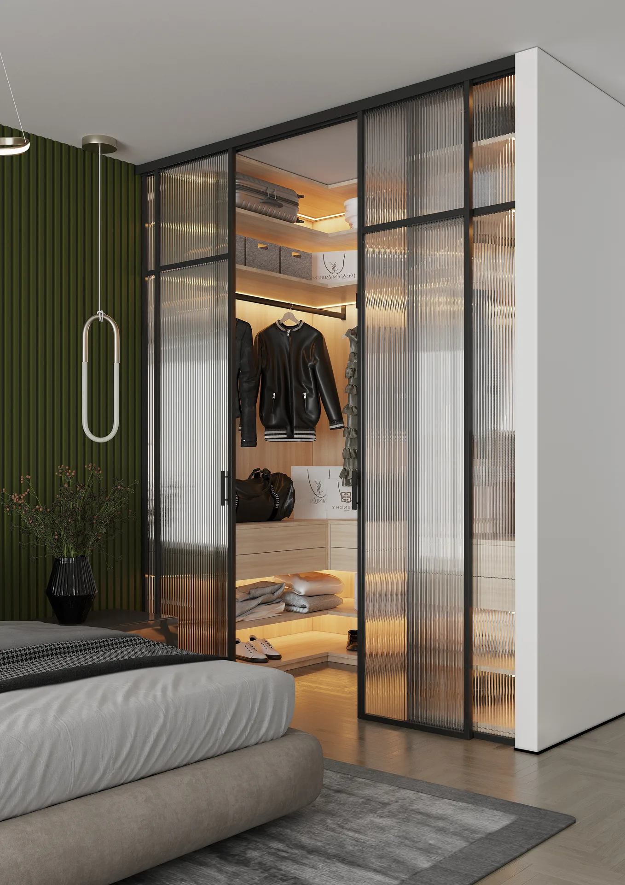
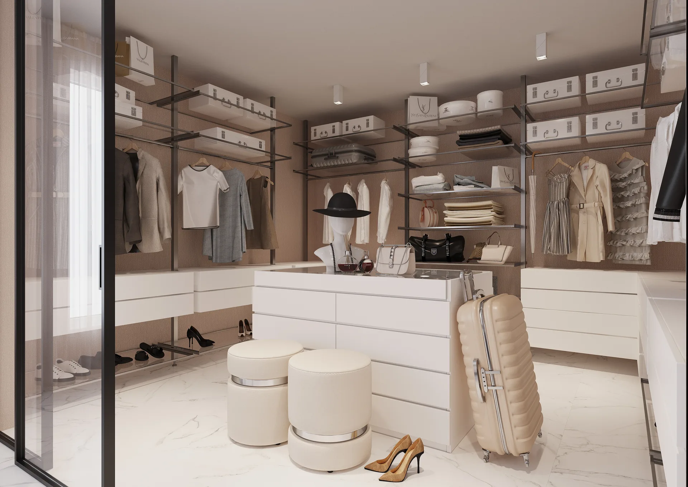

Логика хранения
Распределяем зоны по сезонам, росту вещей и ежедневным маршрутам, а не просто заполняем стены полками.
Гардеробные REMIZ
Создаём открытые и закрытые системы хранения, где одежда, обувь и аксессуары легко находятся и остаются в порядке.
Распределяем зоны по сезонам, росту вещей и ежедневным маршрутам, а не просто заполняем стены полками.
Сочетаем открытые секции, ящики, подсветку и фасады, чтобы гардеробная была удобной и спокойной визуально.
Учитываем мансарды, ниши, колонны и ограниченную глубину помещения ещё на этапе проекта.



Для соседних зон интерьера также проектируем шкафы на заказ и комплексную мебель.